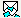

When a join request arrives at the project administrator machine, the dispatcher's taskbar icon changes color to red (see the picture on the right). This indicates that you have incoming script(s).
Open Code Co-op in the project that received the script (this project's icon will be marked with a wave in the Projects tab). Go to the Inbox tab. This is what you'll see.
Push the button in the toolbar to execute the script and accept the join request. At this point Code Co-op will generate a full sync script and send it to the New Member.